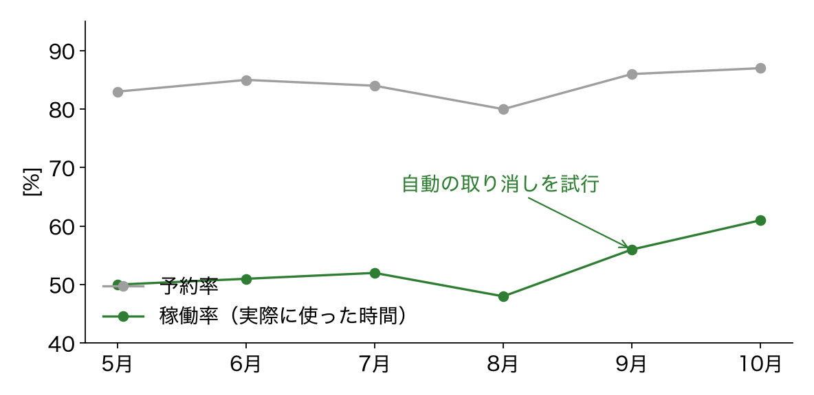

10 月の会議室の利用状況
2026/11/05 総務チーム（Example Inc.）
結論
予約の 3 割が使われておらず，自動の取り消しで改善の見込み
- 自動の取り消しを試した 2 部屋で，稼働率が 52% → 61%
- 繰り返しの予約が，使わなくなっても残り続けている
- 11 月の定例で，全部屋に広げるかを決めたい
稼働率の推移
予約率は 85% 前後で変わらず，稼働率だけが上がった

月ごとの予約率と稼働率（6 部屋の平均．架空）
稼働率の定義
予約した時間ではなく，実際に使った時間で測る
$\displaystyle \rho = \frac{1}{T} \sum_{k=1}^{K} t_k$(1)
- $t_k$：$k$ 回目の利用で，入室から退室までの時間（入退室の記録から）
- $T$：その月の営業時間の合計，$K$：利用の回数
次の一手の比較
手間が小さく効果の大きい「自動の取り消し」を勧める
| 案 | 内容 | 手間 | 効果（見込み） |
|---|---|---|---|
| 自動の取り消し | 開始 15 分で入室が無ければ取り消す | 小 | 稼働率 +9 pt |
| 繰り返し予約の見直し | 3 か月ごとに更新を求める | 中 | 稼働率 +4 pt |
| 部屋を増やす | 倉庫を会議室にする | 大 | 予約の取りやすさ |
決めてほしいこと：自動の取り消しを，12 月から全部屋に広げるか